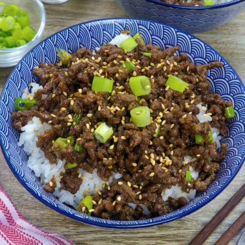

>>>>>>> 622e574afe5728a9e0a9fc0ee71011b16e4278cf:recipes/korean_round_beef.html
Korean Ground Beef

You needn't follow this recipe to a T. This is just a template feel free to add or take away as you please and make it your own.
Ingredients
- 1 lb ground beef
- veggie or some sort of cooking oil
- 2 cloves of garlic minced
- 1 inch ginger minced
- 2/3 cup soy sauce
- 4 tbsp brown sugar
- 1 1/2 tbsp sesame oil
- couple dashs of crushed red pepper flakes
- 2/3 cup green onion
- toasted sesame seeds
Directions
- Cook rice per directions.
- In a medium size pan, heat oil over a medium flame. Once heated, add 2 cloves garlic and 1 inch ginger. Cook 1 min or until fragrant.
- Add 1lb ground beef and chop thoroughly.Cook until a light brown. Drain excess fat with a spoon or papertowel.
- Combine 2/3 cup soy sauce, 4 tbsp sugar, 1 1/2 tbsp sesame oil, and red pepper flakes in a bowl. Stir until sugar is dissolved.
- Add sauce to the pan lower heat and simmer till cooked.
- Mix in 2/3 cup green onion and cook for 1 min.
- Serve over steamed rice and sesame seeds.